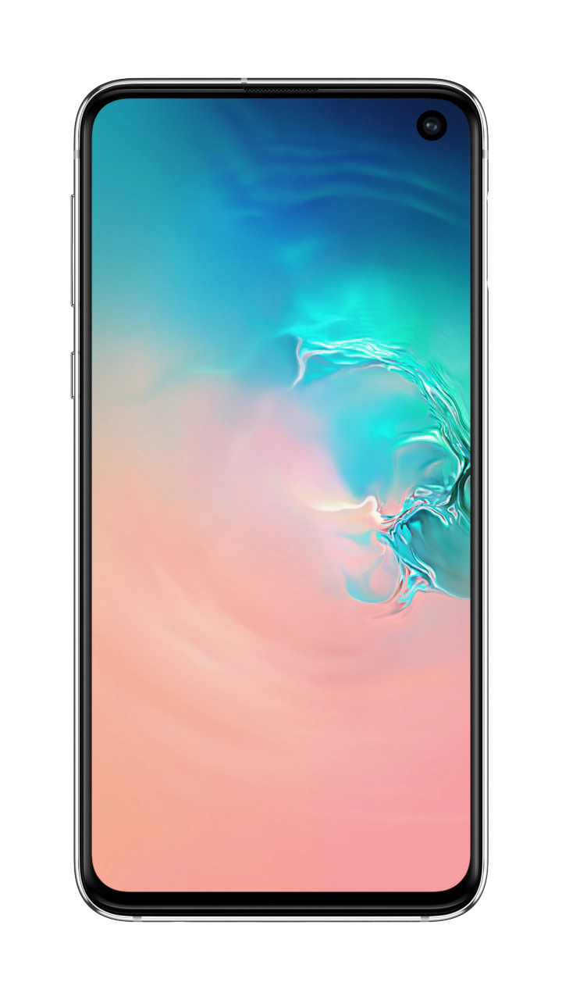
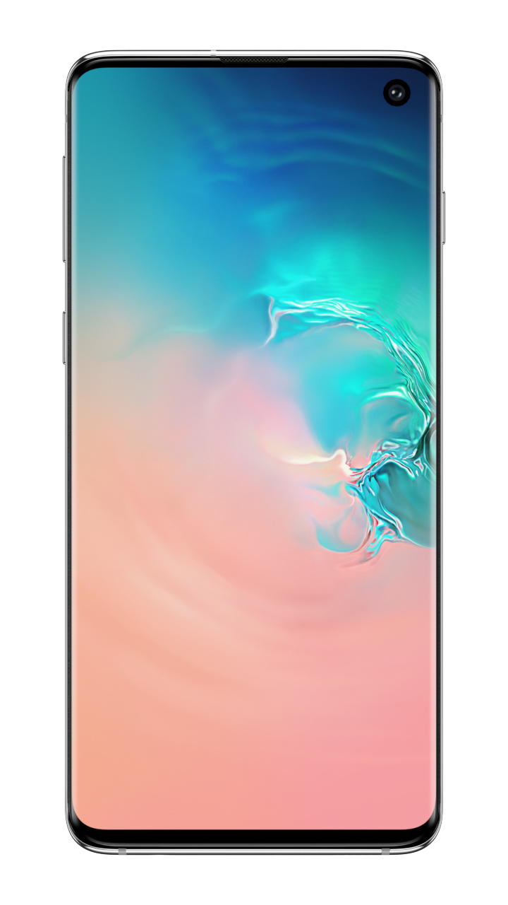
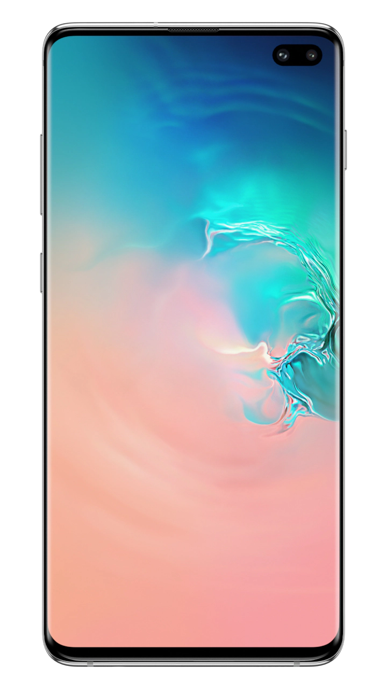

|  |  |  | ||
|---|---|---|---|---|
| Features |
Galaxy S10e |
Galaxy S10 |
Galaxy S10+ |
|
| Colors
|
Prism White Prism Black Flamingo Pink Prism Blue |
Prism White Prism Black Flamingo Pink Prism Blue |
Prism White Prism Black Flamingo Pink Prism Blue Ceramic White Ceramic Black |
|
| Screen Size |
5.8” |
6.1” |
6.4” |
|
| Display type |
Flat |
Edge |
Edge |
|
| FingerPrint Sensor |
Capacitive Fingerprint Sensor (Side) |
Ultrasonic Fingerprint Sensor (On-screen) |
Ultrasonic Fingerprint Sensor (On-screen) |
|
| Front Camera |
Selfie Camera |
Selfie Camera |
Selfie Camera and RGB Depth Camera |
|
| Rear Camera |
Wide-angle Camera Ultra Wide Camera |
Telephoto Camera Wide-angle Camera Ultra Wide Camera |
Telephoto Camera Wide-angle Camera Ultra Wide Camera |
|
| Battery Capacity |
3100mAh |
3400mAh |
4100mAh |